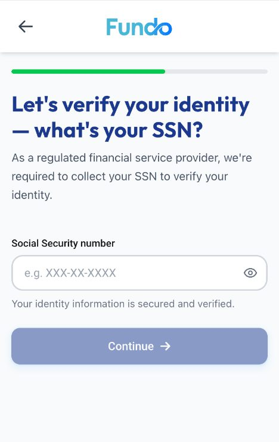
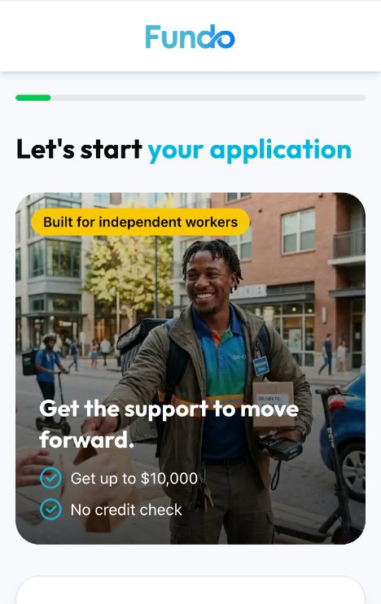
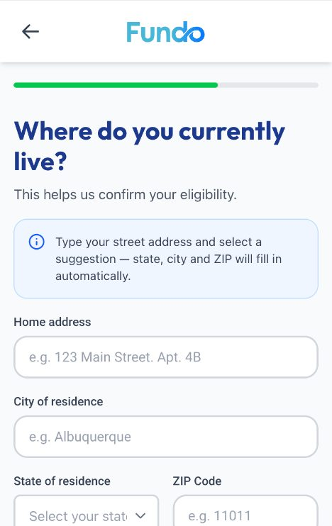
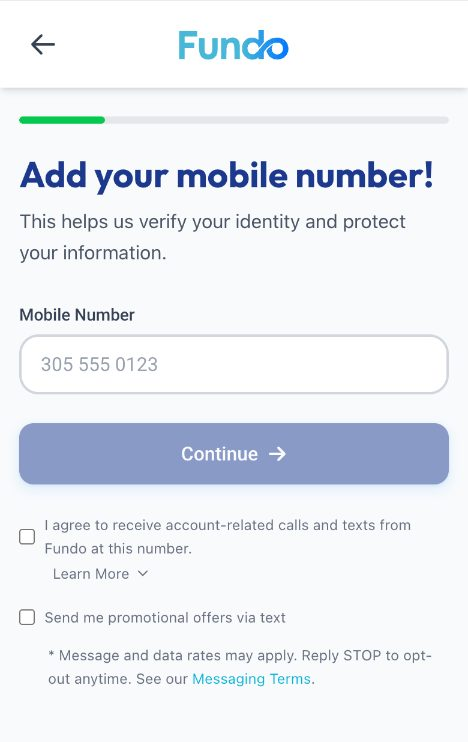
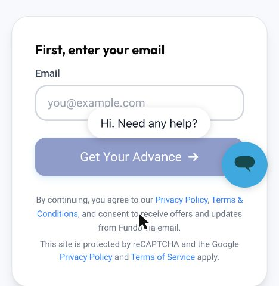
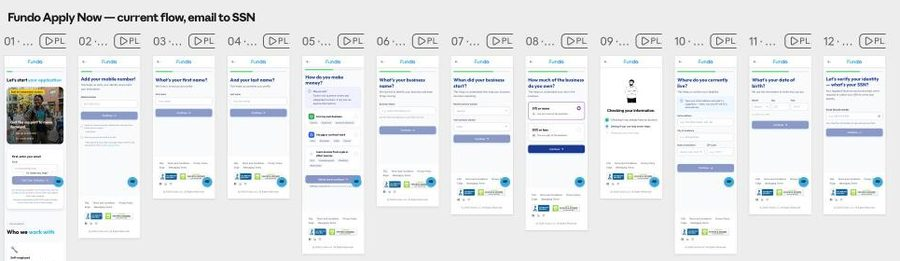
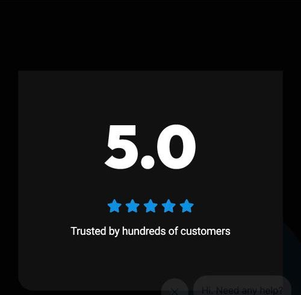
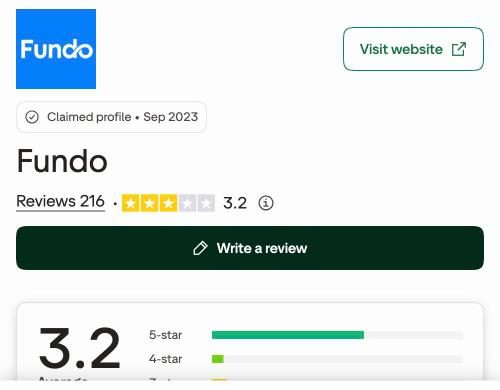

Fundo · UI/UX Lead take-home · November 2026
The problem. Fundo asks for a Social Security number before showing what an advance typically costs. Not on the site, not in the FAQ, not in any of the 12 Apply Now screens. Exact pricing needs bank data; a labelled example does not. On that same SSN screen, "no credit check" turns into "regulated provider, required to collect your SSN". And people from California or New York, or with W-2-only income, find out they don't qualify after nine screens, or never.
The fix.
The proof.
The system. Tokens pulled from Apply Now into a working tokens.json, ten components, voice rules, financial-content patterns, a Claude skill that checks any screen, email or post against them, and a CI script that measures drift on every commit.
Gaps. Social profiles block automated readers; the real pricing grid is not public, so the example uses third-party figures; after the SSN is out of scope by the brief. Editable screens: Claude Design project. Files: GitHub.
Every public surface, on a phone, against the Apply Now prototype. Every finding has a link, a quote or a screenshot. critical costs money or legal exposure today · high loses or misleads customers · medium erodes trust · low is polish.
Nothing says what the money costs before the SSN: no rate, no fee, no cadence, no total. The only cost line on the site is "usually carry much higher rates than other financing options".
Why it matters. People give an SSN without being able to judge suitability. Third parties report factor rates of 1.7 to 3.5, weekly ACH, a $25 same-day fee and a $1,500 default fee; "fees you didn't expect" is the top CFPB complaint. The FTC's RCG Advances case is the MCA precedent; the Dave, Cleo, EarnIn and DailyPay actions are consumer cash-advance apps with the same disclosure pattern.
Evidence: FAQ · Finder · BBB complaints · Trustpilot 3.2

"No credit check" on the home page and screen 01; "regulated financial service provider, required to collect your SSN" on screen 12; the privacy policy says data may come from "credit bureaus".
Why it matters. The promise and the fine print contradict each other on the most sensitive screen. "Regulated" by whom, for an MCA, needs legal review.
Evidence: Prototype 12 · Privacy Policy · FAQ

Eligibility comes too late or never: not CA or NY, not W-2-only, a list of excluded banks, $1,500 a month for 3 months. The flow takes email, phone, name, income, business and full address first; the state field is screen 10.
Why it matters. Ineligible people reach the SSN, hand over data for nothing and land on marketing lists. The brief's own words: application quality matters as much as completion.
Evidence: Prototype 05, 10 · We don't work with · Non-eligible banks

Two product names: "Merchant Cash Advance" (home, FAQ) and "Revenue-Based Financing" (every 2026 blog post and both footer disclaimers), while the app button says "Get Your Advance". Visually the site and the app are two brands: the site uses a light-blue "APPLY NOW" in uppercase with square-ish corners and a dark hero photo; the app uses a navy pill button, sentence case and a white card. Two office addresses in footers. "© 2024" on the site, "@ 2026" in the app.
Why it matters. A customer comparing site, app and contract meets two products and two companies. Naming is also a legal position under state disclosure laws.
Evidence: Home · Blog post · How it Works footer · Portal
Marketing consent is bundled into "By continuing" with no checkbox; screen 02 shows a required consent as an unchecked optional box next to a promo-texts box.
Why it matters. Consent that cannot be separated from the service is the first thing a regulator or class-action firm looks for; it also makes screen 01 read as a lead form.
Evidence: Prototype 01, 02 · Messaging terms

Progress bar with no label or step count; cyan accents at 2.35:1 on white; chat bubble over the primary button on screen 01; emoji as icons; the portal login form rendered twice in the DOM; empty alt text on home-page images.
Why it matters. Screen-reader and low-vision customers cannot tell where they are in a 12-step flow; a bubble over the main button is a tap error on every phone.

Twelve screens to the SSN, several with one field: first and last name separate, business start as two dropdowns, a "Checking your information" interstitial with decorative checkmarks. Screen 01 promises "two minutes".
Why it matters. Each screen is a place to leave on a phone; start-to-SSN is 3 to 6 minutes by the estimate below, so the two-minute promise is the first expectation the flow breaks.
Evidence: Prototype 03, 04, 07, 09

An unsourced "5.0" and "Trusted by hundreds"; a reviews page with 16 five-star quotes, duplicates and no negatives; headline "Everyone Loves Us Except the Competition". Trustpilot shows 3.2 with 27% one-star and no replies; BBB a B with 105 complaints.
Why it matters. Anyone who googles Fundo before entering an SSN sees both. An unsourced 5.0 next to a public 3.2 reads as a lie.
Evidence: Reviews · Trustpilot · BBB


Estimates, not measurements: the live app could not be instrumented, so this is the designer's read on a phone, one hand, first-time applicant with the information at hand. Part 3's instrumentation replaces every bar with data in week one. Dark bar: minimum; light bar: maximum. Red: the screens where people leave.
Screen 01 promises "Take two minutes to submit your basic info". The realistic floor is above three.
Giggle Finance is the direct competitor; Dave and Brigit are the apps gig workers already have on their phones; Bluevine is where an established customer graduates to. Application screens were not fetchable for any of them, so this is public sites, help centres and third-party reviews.
| Point | Fundo | Giggle Finance | Dave | Brigit | Bluevine |
|---|---|---|---|---|---|
| Cost shown before applying | No | No. Factor 1.15 to 1.7 and 7.25% origination only via third parties | Yes, on the home page: 5% ($5 min), up to $5 a month | Yes, on the home page: $8.99 to $15.99 a month, $25 to $500, average $72 | Partial: "as low as 7.8%", fees unlisted |
| Repayment cadence stated | No ("small automatic bank debits") | Yes: "We set up weekly payments" | Partial: "repayable on demand" | Partial: next payday, free extension | Yes: weekly or monthly auto-debit |
| "Why we ask" copy on sensitive fields | Screen 05 only | None | SSN article in help centre | None found | Bank-connection FAQ |
| SSN timing | Screen 12, before bank connection | Not public; hard pull at offer acceptance | In sign-up, before bank link | Not public | After bank connection, soft pull |
| Trust and reviews | Unsourced 5.0; Trustpilot 3.2, no replies | Video testimonials; Trustpilot 3.5, no replies | App-store quotes; Play 4.7 (633K) | "4.7+ with 971K reviews"; Trustpilot 4.5, replies to 100% | Trustpilot 4.7 (11.7K), BBB A+, issuing bank named |
| States served | Not CA, NY | Not NY, CA, OR | Nationwide | "Not available in all states" | Not NV, ND, SD; no sole proprietors |
| What they do better | Cadence and eligibility on the site; bureau reporting as a benefit | Fee schedule in the store listing; SSN rationale; no late fees | Prices and average advance up front; replies to every negative review | APR floor, cadence, late fee, issuing bank all public | |
| What they do worse | Two maximums on one page; hidden origination fee; hard pull despite "no credit requirements" | Fees only became clear after the FTC suit | Eligibility only in third-party sources | No sole proprietors, so not for most gig workers |
Sources: gigglefinance.com and FAQ, finder.com and nav.com reviews; dave.com, Dave help centre, NerdWallet (Apr 2026); hellobrigit.com, NerdWallet (May 2026); bluevine.com/line-of-credit, Finder (Oct 2026); Trustpilot pages for each. Full list in Sources.
Per screen: why people leave (a guess until Part 3 measures it), the idea, the metric, the test. Ideas that add unfundable applications or hide cost are excluded on purpose.
Why they leaveNo idea what it costs; "advance" for an email feels like a lead trap
IdeaReplace the hero card with a worked example and three eligibility lines; move marketing consent to its own unchecked box
Metric% reaching 02; eligible-start rate
TestA/B 50/50, 2 weeks
Why they leaveFear of calls
IdeaOne line above the field: "We text a code now and only call if something blocks your funding." Account texts as a statement, promo texts opt-in
Metric% reaching 03
TestA/B 50/50
Why they leaveTwo screens for one fact
IdeaOne screen, two fields, autocomplete attributes set
MetricTime 03 to 05; % reaching 05
TestA/B 50/50, after tests 1 to 3
Why they leaveWrong people continue; right people doubt
IdeaKeep the pattern; add under the third option: "If all your income is W-2, we can't fund you yet" and branch to a soft exit
MetricDeclines for W-2-only after SSN (down); % reaching 06 among eligible
TestA/B 50/50; guardrail on eligible starts
Why they leave"I don't have one"
IdeaHelper: "No business name? Use your own name, exactly as your bank shows it", prefilled with one tap
Metric% reaching 07; edits per field
TestShip and measure (not a priority test)
Why they leaveFalse precision, two dropdowns
IdeaRange chips first; exact month only if underwriting needs it; under 3 months told now with a reminder
Metric% reaching 08; time-in-business declines after SSN (down)
TestA/B 50/50
Why they leaveLittle
IdeaRemove the preselection; one line on what 50% or less changes
MetricWatch % reaching 10
TestShip, measure
Why they leaveTheatre
IdeaMake it real: duplicate-account lookup and a state check from area code or IP
MetricIneligible-state applicants reaching 12 (to near zero)
TestShip, measure
Why they leaveFour fields; late surprise
IdeaPlaces autocomplete fills city, state, ZIP; CA or NY stops here with the screen in Part 2
MetricTime on 10; % reaching 11
TestA/B 50/50
Why they leaveLow
IdeaOne masked field, numeric keyboard
MetricTime on 11; errors per start
TestShip and measure
Why they leaveFear, no cost seen, no next step
IdeaPart 2: cost and next steps before the SSN; SSN screen rewritten
MetricStart-to-SSN; SSN-to-bank-connected
TestA/B 50/50, Part 3
Why they leavePromises without price; "apply now" in four casings
IdeaOne hero: amount range, worked cost example, three eligibility lines, one "Apply now" to one URL with UTM instead of PID=8888
MetricHome to screen 01 click-through; eligible-start rate
TestA/B on the hero only
Why they leaveFour apply links, one baked into an image
IdeaOne in-article module after "Where does Fundo fit?": eligibility checklist and a single tracked link
MetricPost to screen 01 click-through, by post
TestShip to all posts, measure by UTM
Why they leaveCannot verify (profile blocked)
IdeaTemplate with the three eligibility lines and the cost example; never "no credit check" alone; bio link to a tracked page
MetricBio clicks to screen 01; eligible-start rate from social
TestAlternate two templates by week
Chosen
A new screen before the SSN with a worked cost example, the cadence, the eligibility rules and what comes next; then the SSN screen rewritten. Fixes the two critical findings at once, on the screen where start-to-SSN is decided, without waiting for the site to be rebuilt.
Second
Highest traffic and the consent problem. Not first: fixing it sends more people to the SSN screen, where they still stop, and its copy needs the same legal sign-off on cost. Next sprint.
Third
Cheap and removes unfundable applications. Not first: the same eligibility lines are in the new pre-SSN screen, and the real fix (state from area code) is engineering with one decline screen, designed below as an edge case.
I have done this once before. At PPI, Argentina's largest broker, 62% of new users dropped between starting account opening and their first trade. Legal would not let us remove the regulated steps, so we explained them, instrumented the flow first and changed one thing at a time behind A/B tests. Account openings rose 20 to 30 percent. Same logic here: the SSN step stays; what changes is what the customer knows before it. Yes, this adds a screen to a flow I criticise for having too many: net +1 today, net −2 once 03 + 04 and the date-of-birth fields are merged, which is test #4 in Part 1.
Before is the prototype's screen 12, reproduced word for word (heading colour matched to the live screen). After is two screens. The numbers in the cost example are the lowest publicly reported Fundo factor (1.7 over 10 weeks, Finder); they are placeholders for Fundo's real pricing grid and the design works with any numbers. The trade-off is explicit: if the real factor is lower, the example only improves; if it is 1.7, this screen will lose some applicants before the bank step, and those are the applicants the brief says Fundo should not want. Legal and compliance sign the example before it ships; that is a precondition, not a footnote.
Before · screen 12 as it is today
Let's verify your identity — what's your SSN?
As a regulated financial service provider, we're required to collect your SSN to verify your identity.
Your identity information is secured and verified.
After · new screen 11½: what this costs, what comes next
Before you share your SSN, here is what an advance costs
You repay $340 a week for 10 weeks. Total paid back: $3,400. Pay it off early and you get a discount.
Next: your SSN (30 seconds) → your bank through Plaid (2 minutes) → your offer, with the weekly payment and total shown before you accept anything.
After · screen 12 rewritten
Confirm it's you with your Social Security number
Encrypted in transit and stored securely. Shown masked once you enter it.
Prefer not to continue? Save and come back later or ask a question. You can stop at any time. Nothing is funded until you accept an offer.
The brief lists seven. Five are drawn below; screen reader and the 360 px viewport are described as behaviour because they are not a picture.
Error · SSN does not match
Confirm it's you with your Social Security number
This number doesn't match the name and date of birth you entered. Check the digits, or go back to fix your name or birth date.
Two more tries before we ask you to verify another way.
Declined · after bank review
We can't fund you today, and here is why
This decision used your bank activity only. It did not touch your credit score.
What you can do
We keep your application for 90 days so you don't start over. Delete my data
Unsupported state · shown at address, not after SSN
We can't fund businesses in California yet
You selected California as your state of residence. Fundo's advances aren't offered there or in New York. We stopped here so you don't share your date of birth or SSN for nothing.
We haven't asked for your SSN or bank details. If you want your name and email removed, tell us here.
Returning customer · recognised at email
Pick up where you left off
This email has an application in progress. We'll text a code to the phone number on it to make sure it's you, then you continue from your last screen.
Didn't get it? Send again · Use email instead
Already a customer? Your balance, payments and renewal are in the client portal.
Slow connection · while the SSN is checked
Checking your identity
Usually under 10 seconds.
role="progressbar" with value and label: "step 12 of 13".aria-describedby; errors are role="alert".The app is Next.js, so this is a code change behind a flag, not a redesign project. I write React and Next.js and shipped a payments app end to end this year (React Native, Supabase, a bank gateway certified in sandbox), so the frames above are the markup I would hand over, not pictures of it.
pre_ssn_cost at 0%. The state check on the address screen gets its own flag and ships after this test reads, so one change is tested at a time.Handed over: the frames as HTML, the copy JSON, the ARIA notes, the event list. Not handed over: pricing logic, which is underwriting's.
In the order I would run it: talk to customers, instrument, test with guardrails, decide with a rollback rule written before launch.
Hypothesis. A worked cost example and the next two steps before the SSN, plus an SSN screen about identity rather than regulation, raise start-to-SSN conversion by at least 8% relative without raising cost-related declines after the offer. Primary metric: valid SSN submitted ÷ eligible starts, where eligible means a state and income type that Fundo serves, known at screens 05 and 10 in both arms. Raw start-to-SSN is reported next to it. The treatment screen tells ineligible people to leave before the SSN, so a raw rate would be biased against the design by construction. Secondary: SSN to bank connected, bank connected to offer accepted. Traffic and baseline (35%) are assumptions; Amplitude replaces both on day one.
Two events per screen with one shared property set, so the funnel is a query, not a project. Properties: screen_id, step_index, variant, device, viewport_width, source (UTM and partner_id, replacing the PID in the URL), is_returning, income_type and state once known.
apply_screen_viewed / apply_screen_completedplus time_on_screen_ms, validation_errors, field_editsapply_field_errorscreen, field, error_codeapply_cost_table_opened · apply_exit_pathsave for later, ask a question, chat, backapply_ssn_submitted · apply_bank_connected · offer_viewed · offer_acceptedoffer carries factor, term and payment bucket, never raw dataapply_declinedreason_code: state, income_type, revenue, time_in_business, bank, identityIllustrative weekly numbers (1,200 starts assumed). SSN submitted over eligible starts is the primary metric; offer accepted is the first guardrail.
apply_ssn_submitted.Apply Now is the one surface built with intent, so the system starts there. Fonts, colours and radii were read from the computed styles of the live first screen at app.fundo.com/apply-now; spacing is observed, not read from source. Working files at the end and in the repo.
Working examples: tokens.json, copy.json, the brand-check skill and the drift script are in the repository; the first and third are reproduced at the end of this part. Five hues is one or two more than a financial brand needs. The system keeps them and gives each one job: cyan never carries text on white again, green means progress and success only, yellow means "read this before you continue".
Drift found while extracting: the FAQ accordion on screen 01 falls back to the system font. The check below catches exactly that.
role="alert", masked variant with show togglerole="progressbar"Plain, specific, calm. Fundo talks to someone who drives for a living and is deciding whether to trust a company with their bank account. Say the number. Say what we do with it. Say what is next. Never promise speed without the condition. One product name everywhere ("advance", the word the button already uses; legal picks the contract term and the site follows).
tokens.css and the Tailwind theme; one component package for Apply Now, portal and admin.theme.json; three block patterns: cost hero, eligibility triplet, one apply button with UTM.Claude Design drafts screens, emails and posts from tokens.json, copy.json and the component list. Claude Code scaffolds the component and the MJML template from the same file.
The fundo-brand-check skill reviews any screenshot, HTML or copy against tokens, voice and financial patterns, with block / fix / note severities. Runs in the pull request and in chat.
A CI script (scripts/drift.sh in the repo) counts hex, rgba, font-family and radius literals outside the token file, per surface, on every commit. I run the same idea on my own site: 97 hardcoded colours against 96 token references on day one, 3 against 252 today, and the page reports itself.
UX lead owns tokens, components, copy and checks; engineering the build and release; legal the flagged lines on a date; marketing the patterns, but cannot add a colour or font. A change is a PR to the tokens repo, semver, each surface pins a version. Weekly drift message, quarterly phone walk like Part 1. This document is the first one.
{
"$schema": "https://design-tokens.github.io/community-group/format/",
"color": {
"brand": { "blue": { "$value": "#0083ff", "$type": "color", "$description": "Logo, links, accents" },
"navy": { "$value": "#003b8e", "$type": "color", "$description": "Primary button" } },
"accent": { "cyan": { "$value": "#00b9da", "$type": "color", "$description": "Dark backgrounds only; 2.6:1 on white" } },
"status": { "success": { "$value": "#00c753", "$type": "color" },
"attention": { "$value": "#ffc600", "$type": "color" },
"error": { "$value": "#d92d20", "$type": "color" },
"errorText": { "$value": "#b42318", "$type": "color" } },
"callout": { "bg": { "$value": "#e8f3ff", "$type": "color" }, "border": { "$value": "#cfe4ff", "$type": "color" } },
"action": { "disabled": { "$value": "#8a9bd4", "$type": "color" } },
"ink": { "primary": { "$value": "#0a0a0a", "$type": "color" },
"secondary": { "$value": "#334153", "$type": "color" },
"tertiary": { "$value": "#6b7280", "$type": "color" } },
"line": { "default": { "$value": "#e5e7eb", "$type": "color" } },
"surface": { "page": { "$value": "#f7f8fb", "$type": "color" }, "card": { "$value": "#ffffff", "$type": "color" } }
},
"font": {
"display": { "$value": "Outfit, system-ui, sans-serif", "$type": "fontFamily" },
"body": { "$value": "Roboto, system-ui, sans-serif", "$type": "fontFamily" },
"email": { "$value": "Arial, Helvetica, sans-serif", "$type": "fontFamily", "$description": "Inbox fallback" }
},
"type": {
"h1": { "$value": { "fontFamily": "{font.display}", "fontWeight": 700, "fontSize": "24px", "lineHeight": "29px" }, "$type": "typography" },
"h2": { "$value": { "fontFamily": "{font.display}", "fontWeight": 700, "fontSize": "24px", "lineHeight": "32px" }, "$type": "typography" },
"h3": { "$value": { "fontFamily": "{font.display}", "fontWeight": 700, "fontSize": "18px", "lineHeight": "28px" }, "$type": "typography" },
"body": { "$value": { "fontFamily": "{font.body}", "fontWeight": 400, "fontSize": "16px", "lineHeight": "24px" }, "$type": "typography" },
"label": { "$value": { "fontFamily": "{font.body}", "fontWeight": 500, "fontSize": "14px", "lineHeight": "16px" }, "$type": "typography" },
"helper": { "$value": { "fontFamily": "{font.body}", "fontWeight": 400, "fontSize": "13px", "lineHeight": "18px" }, "$type": "typography" },
"legal": { "$value": { "fontFamily": "{font.body}", "fontWeight": 400, "fontSize": "12px", "lineHeight": "18px" }, "$type": "typography" }
},
"space": { "1": { "$value": "4px", "$type": "dimension" }, "2": { "$value": "8px", "$type": "dimension" },
"3": { "$value": "12px", "$type": "dimension" }, "4": { "$value": "16px", "$type": "dimension" },
"5": { "$value": "24px", "$type": "dimension" }, "6": { "$value": "32px", "$type": "dimension" },
"7": { "$value": "48px", "$type": "dimension" }, "8": { "$value": "64px", "$type": "dimension" } },
"radius": { "pill": { "$value": "9999px", "$type": "dimension" }, "card": { "$value": "16px", "$type": "dimension" },
"hero": { "$value": "24px", "$type": "dimension" }, "callout": { "$value": "12px", "$type": "dimension" } },
"size": { "input": { "$value": "46px", "$type": "dimension" }, "button": { "$value": "50px", "$type": "dimension" }, "touch": { "$value": "44px", "$type": "dimension" } },
"semantic": {
"action": { "primary": { "$value": "{color.brand.navy}", "$type": "color" }, "link": { "$value": "{color.brand.blue}", "$type": "color" } },
"progress": { "fill": { "$value": "{color.status.success}", "$type": "color" }, "track": { "$value": "{color.line.default}", "$type": "color" } },
"callout": { "attention": { "$value": "{color.status.attention}", "$type": "color" } }
}
}---
name: fundo-brand-check
description: Review a Fundo screen, email, page or social post against the brand tokens, voice rules and financial-content patterns. Use before any customer-facing change ships.
---
You are reviewing customer-facing Fundo work. Load tokens.json and copy.json from the repository root.
Check, in this order, and report each finding as: location, rule broken, severity (block / fix / note), fix.
1. Tokens: any colour, font-family, font-size or radius not in tokens.json is a "fix". Cyan #00b9da on a white or light surface is a "block".
2. Accessibility: text contrast under 4.5:1, placeholder used as the only label, touch target under 44px, missing h1, anything overlapping the primary button: "block".
3. Financial content: a cost mentioned without cadence and total is a "block". "No credit check" without the identity/score sentence is a "block". A decline without the number, the threshold and a next step is a "block". Speed claims without the condition are a "fix".
4. Voice: exclamation marks in forms, "Don't worry", unsourced ratings, more than one product name in one surface: "fix".
5. Copy consistency: any string that differs from copy.json for the same key: "fix", quote both.
End with the three findings to fix first and a one-line verdict: ship / fix first / do not ship.
Never rewrite the work yourself unless asked; list what to change.One sitting, in a Claude session with browser, shell and file access, the way I work every day. The split, honestly:
"Fetch and report on these surfaces, as raw and complete as possible (verbatim headings, CTAs,
claims, numbers, disclaimers, footers; I need exact wording for an audit) ... Do NOT submit any
form on fundo.com or app.fundo.com. Public information only. ... report how cost is explained:
factor rate, fees, repayment frequency, total payback example, consequences of failed payments,
states not served, time to funding. ... Search for Fundo reviews (Trustpilot, BBB, Google) and
report the 3 to 5 most common complaints and praises with source links.""Compare these competitors on the SAME points, public surfaces only ... (a) how the application
starts ... whether they explain WHY each sensitive field is needed, when SSN and bank connection
happen ... (b) financial clarity: is cost shown before applying ... Give exact short quotes and
source URLs for every claim.""Go with the SSN screen and the moment before it; the arguments hold. Keep the weekly example,
anything else reads as misleading. Make the no-credit sentence true in both cases (soft identity
check or not). Mention my fintech experience where it is relevant, never forced. Less text,
more graphic: how we present it matters as much as what we present."Not verified, and said so: the social profiles, the screens after the SSN, the real pricing grid (third-party figures stand in, labelled as such).
Diego Munar · diegomunar.com · The redesigned screens are also available as an editable Claude Design project and the files as a GitHub repository (links in the summary).